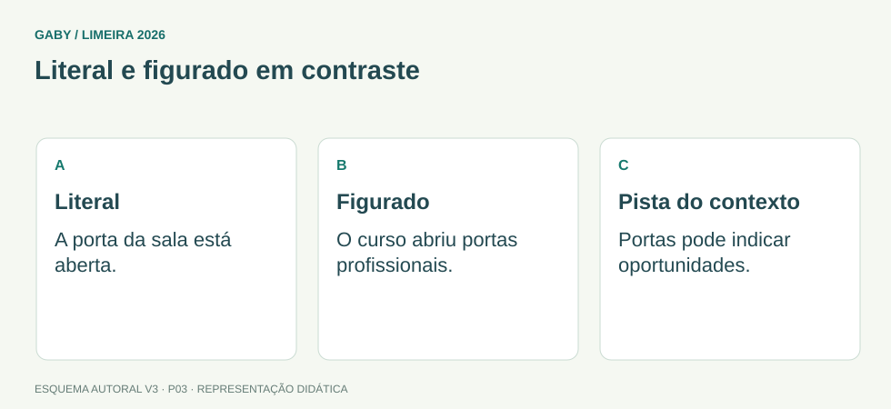

Objetivos do módulo
- Distinguir linguagem literal de figurada.
- Reconhecer metáfora, metonímia e ironia em exemplos simples.
- Interpretar o efeito produzido por escolhas figuradas.
Literal e figurado em contraste

Descrição em texto do esquema
- Literal: A porta da sala está aberta.
- Figurado: O curso abriu portas profissionais.
- Pista do contexto: Portas pode indicar oportunidades.
Oficina visual · aplique o esquema
Explique “a notícia caiu como uma bomba” sem usar outra metáfora.
Atividade autoral complementar da V3. Registre sua resposta; a resolução está no arquivo de gabarito e revisão.
1. Denotação e conotação
Sentido próprio ou denotativo é o uso mais literal e convencional. Sentido figurado ou conotativo amplia ou desloca esse significado por associação. Em “a porta está aberta”, porta é literal; em “a educação abre portas”, “portas” representa oportunidades.
O contexto decide. A mesma palavra pode ser literal em uma frase e figurada em outra.
2. Metáfora
Metáfora aproxima realidades sem usar conectivo comparativo explícito. “Aquele servidor é uma ponte entre os setores” não o transforma fisicamente em ponte: atribui a ele a função de ligar partes.
3. Metonímia
Metonímia ocorre por relação de proximidade: autor pela obra (“li Machado de Assis”), recipiente pelo conteúdo (“bebeu um copo”), instituição por seus agentes (“a prefeitura informou”). Não é semelhança; é associação.
4. Ironia e efeitos
Ironia diz ou sugere algo em contraste com o sentido literal, geralmente para criticar ou produzir humor. Identificá-la exige contexto, porque isoladamente a frase pode parecer elogio.
Exemplos resolvidos passo a passo
Exemplo 1
Situação: “A burocracia engoliu o pedido.”
Exemplo 2
Situação: “Li Clarice Lispector nas férias.”
Exemplo 3
Situação: Depois de três falhas seguidas, alguém diz “Que sistema perfeito!”.
Pegadinhas e erros frequentes
- Achar que toda comparação é metáfora.
- Confundir metonímia (proximidade) com metáfora (semelhança).
- Ignorar o contexto na identificação de ironia.
Resumo de prova
- Denotação = literal; conotação = figurada.
- Metáfora transfere traços por semelhança.
- Metonímia substitui por proximidade/associação.
- Ironia depende do contraste contextual.
Exercícios do módulo
Resolva sem consultar o arquivo de gabarito. As questões são autorais e construídas para treinar os conceitos do edital.
- jurídico
- literal
- figurado
- técnico
Fontes: Inep — Matrizes e escalas do Saeb · Presidência da República — Manual de Redação, 3ª edição.
- metáfora
- metonímia
- antônimo
- hipérbato
Fontes: Inep — Matrizes e escalas do Saeb · Presidência da República — Manual de Redação, 3ª edição.
- metáfora
- ironia
- denotação pura
- metonímia
Fontes: Inep — Matrizes e escalas do Saeb · Presidência da República — Manual de Redação, 3ª edição.
- irônico
- metonímico
- figurativo
- literal
Fontes: Inep — Matrizes e escalas do Saeb · Presidência da República — Manual de Redação, 3ª edição.
- eufonia
- ironia
- denotação
- sinonímia
Fontes: Inep — Matrizes e escalas do Saeb · Presidência da República — Manual de Redação, 3ª edição.
- proximidade administrativa
- semelhança de traços
- ordem alfabética
- oposição lógica
Fontes: Inep — Matrizes e escalas do Saeb · Presidência da República — Manual de Redação, 3ª edição.
- rima
- antônimo
- concordância
- associação ou contiguidade
Fontes: Inep — Matrizes e escalas do Saeb · Presidência da República — Manual de Redação, 3ª edição.
- erro gramatical
- termo técnico
- literal
- figurado
Fontes: Inep — Matrizes e escalas do Saeb · Presidência da República — Manual de Redação, 3ª edição.
- do número de sílabas
- do tamanho da palavra
- do contexto
- da posição na linha
Fontes: Inep — Matrizes e escalas do Saeb · Presidência da República — Manual de Redação, 3ª edição.
- metonímia institucional
- metáfora necessariamente
- ironia obrigatória
- antonímia
Fontes: Inep — Matrizes e escalas do Saeb · Presidência da República — Manual de Redação, 3ª edição.
Quando terminar, abra Português 03 - Sentido Próprio e Figurado - Gabarito e Revisão.
Checklist de domínio
- ☐ Distinguir linguagem literal de figurada.
- ☐ Reconhecer metáfora, metonímia e ironia em exemplos simples.
- ☐ Interpretar o efeito produzido por escolhas figuradas.
Meta do módulo: 80% ou mais nas questões, sem depender de consulta.
Referências e conteúdos auxiliares
- Inep — Matrizes e escalas do SaebApoio às habilidades de leitura e interpretação. Não corresponde à matriz do concurso de Limeira.
- Presidência da República — Manual de Redação, 3ª ediçãoClareza, redação oficial, concordância, regência e pontuação. Referência de apoio; modelos locais podem ter regras próprias.
Referências externas de apoio consultadas para a V3 em 27/09/2026. A origem das questões é o material autoral do projeto; estes links não indicam que uma instituição publicou ou validou os exercícios. As páginas externas precisam de internet. Em informática, confira a versão do programa; em legislação, observe o recorte e as regras de atualização do edital.